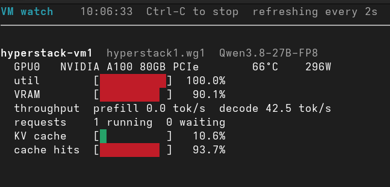

Running my own LLMs for coding: Hyperstack, vLLM and the pi coding agent
The gt calculator was built almost entirely with local LLMs running on rented Hyperstack VMs, and I ended that post with a promise: "I will write another blog post at some point about my setup and what I learned from self-hosting models on Hyperstack." This is that post.
2026-06-01 gt calculator - a calculator built with local LLMs
The main motivation was a question I wanted to answer before spending money: should I buy hardware to run my own LLMs? A new RTX 5090 with 32 GB VRAM costs a few thousand dollars, and a 128 GB DGX Spark box starts at $3,999. Before putting either on my desk, I wanted to know what it feels like to have a 27B model (and the occasional 120B one) as a daily coding partner. So I rented instead: Hyperstack VMs with A100 80 GB GPUs, spun up when I need them, torn down when I don't.
Hyperstack
A few months in, the setup has grown into a small toolchain I call hypr. One Ruby script manages the whole lifecycle (create the VM, open a WireGuard tunnel, start vLLM with the model of choice), and I can run two VMs at the same time, each with its own model and its own pi coding agent in a tmux pane.
In this post I go through the setup, how the inference works under the hood (prefill, decode, KV cache, prefix caching), the numbers I see in practice, and where I stand now on buying hardware.
Birgitta Böckeler's memo in the Fowler "Exploring Gen AI" series is useful related reading: a factor checklist for whether local models are viable for agentic coding. Her stack is Apple Silicon + LM Studio; mine is rented A100 + vLLM. Same problem, different hardware, but her checklist applies here too.
Viability of local models for coding (Birgitta Böckeler / Martin Fowler)
hypr on GitHub
Pi coding agent

Table of Contents
The setup at a glance
Everything starts on my always-on home server, a Linux VM on a FreeBSD box that I use as an operator machine. The laptop just SSHes in. ruby hyperstack.rb --vm 1 create (or --vm both for two VMs in parallel) provisions a Hyperstack VM (Ubuntu 24.04 with CUDA and Docker preinstalled, one A100 80 GB PCIe GPU), sets up a WireGuard tunnel, and starts the model in a vLLM Docker container. Five to ten minutes later the model is serving on an OpenAI-compatible API, reachable over the tunnel.
┌──────────────┐
│ operator VM │
│ tmux + pi │
└───────┬──────┘
│
WireGuard wg1 · UDP 56710 · 192.168.3.0/24
│
┌─────────────┴─────────────┐
▼ ▼
┌───────────────────┐ ┌───────────────────┐
│ VM1 · 192.168.3.1 │ │ VM2 · 192.168.3.3 │
│ A100 80GB PCIe │ │ A100 80GB PCIe │
│ vLLM :11434 │ │ vLLM :11434 │
│ Qwen3.8 27B FP8 │ │ Gemma 4 31B AWQ │
└───────────────────┘ └───────────────────┘
The WireGuard tunnel is the interesting bit. A single wg1 interface on the operator machine carries traffic to both VMs at once, and each VM is just another [Peer] block in the same config. The vLLM port (11434) is firewalled to the tunnel subnet only, so the API is not exposed to the internet at all. There's no proxy, no load balancer and no API keys. The tunnel is the security boundary.
hypr is a Ruby script with a small TOML config per VM. The commands that matter:
- create / delete — provision or destroy a VM (WireGuard + vLLM included)
- status — VM, tunnel and model state
- test — end-to-end inference check over the tunnel
- watch — live dashboard: GPU, throughput, KV cache per VM
- model switch <preset> — hot-swap the model on a running VM
What decides if this works
Before the walkthrough, the short version of what decides whether a rented (or owned) box is usable as a coding-agent backend. Not the marketing specs, but the stuff that bites you mid-session:
- VRAM — weights plus the KV cache pool. If the weights don't fit, you crash or crawl.
- Memory bandwidth — decode is bandwidth-bound. "Fits" and "feels fast" are different questions.
- Parameter count vs quantization — bigger usually helps until the weights crowd out context and you start turning features off to load at all.
- MoE vs dense — huge total params, small active set; better quality per GB when it works.
- Context vs weights — every token of context costs VRAM the weights already claimed.
- Reasoning cost — thinking tokens burn latency and context; sometimes you want them off.
- Tool-calling reliability — without working tools you are back to copy-paste chat.
- Harness overhead — every extension and tool schema eats scarce context.
- Runtime — plug-and-play vs knobs and throughput. hypr picks the second.
Some of these get real sections below. Others are asides where the tradeoff shows up. A couple are still stubs, because I have not run the bake-offs yet.
The VMs and the models
Both VMs are n3-A100x1 flavors: one A100 80 GB PCIe, 28 vCPUs, 120 GB RAM, in a Canadian region. When the A100 flavor is sold out, the config flips to n3-H100x1 (80 GB as well), and everything else stays the same.
The default model on VM1 is Qwen/Qwen3.8-27B-FP8, a dense 27B model with a native 262K context window, FP8-quantized. As of writing, that is also my main model in this setup, and every number measured in this post is measured on it. VM2 runs Gemma 4 31B (AWQ 4-bit) by default, so I can work on two projects in parallel with two different models and compare how they behave.
Each VM's TOML config defines named presets, so switching models does not mean reprovisioning:
- qwen38-27b — Qwen3.8 27B FP8 (default), ~45 GB VRAM, 262K context
- qwen36-27b — Qwen3.6 27B FP8, ~45 GB VRAM, 262K context
- gemma4-31b — Gemma 4 31B IT (AWQ-4bit), ~19 GB VRAM, 32K context
- nemotron-super — Nemotron-3-Super 120B (Mamba+MoE, 12B active), ~74 GiB VRAM, 32K context
- qwen36-35b-a3b — Qwen3.6-35B-A3B MoE (AWQ, 3B active), ~18 GB VRAM, 65K context; runs with a quantized KV cache (turboquant_k8v4) and chunked prefill disabled
- qwen3-coder-30b — Qwen3-Coder-30B-A3B (MoE, AWQ), ~18 GB VRAM, 65K context
- qwen25-coder-32b — Qwen2.5-Coder-32B (AWQ), ~18 GB VRAM, 32K context
- deepseek-r1-32b — DeepSeek-R1-Distill-Qwen-32B (AWQ), ~18 GB VRAM, 32K context
- qwen3-32b — Qwen3-32B (AWQ), ~18 GB VRAM, 32K context
- devstral — Devstral-Small-2507 (AWQ-4bit), ~15 GB VRAM, 32K context
ruby hyperstack.rb --vm 1 model switch nemotron-super stops the running container, starts a new one with the preset's flags, and waits for readiness. The model download on first run is the slow part (~45 GB for the 27B); after that the weights are cached on the VM's ephemeral NVMe disk and a switch takes a few minutes.
Two details:
- Qwen3.8 is brand new, so VM1 runs the vllm/vllm-openai:nightly image until stable vLLM ships support for the architecture.
- The big 120B MoE (Nemotron-3-Super) has to have its context capped at 32K and prefix caching disabled to fit on a single A100, since the weights alone take most of the 80 GB. That tension between model size and context length is the core of VRAM budgeting (more below).
A few notes on how to read that list. Several presets are MoEs: Nemotron-3-Super, qwen36-35b-a3b, qwen3-coder-30b. MoE means a huge total parameter count with only a small active set per token, so you get denser-model quality for less of the card. That's why qwen36-35b-a3b sits at ~18 GB with 3B active, and why Nemotron can be 120B total with 12B active and still fit (barely) once you cap context.
Quantization is how the rest of the list packs into leftover VRAM. FP8 is my daily driver on the 27B: good quality, ~45 GB, room left for a long context. AWQ-4bit trades some quality for footprint and speed. I have not tried QAT yet.
Bigger is usually better until the weights crowd the card. The Nemotron preset is the extreme case here: weights eat most of the 80 GB, so context has to shrink to 32K and prefix caching goes off just to load. Same shape as stuffing a big model into too little memory: it runs, but you give up the room that makes agent sessions pleasant.
Why this is the daily driver
The official model card benchmarks Qwen3.8-27B against its predecessor, Qwen's own closed-weight Qwen3.7-Plus, a 30B-class competitor, and the frontier Opus 4.6 Max. The coding-relevant rows:
Qwen3.8-27B Qwen3.6-27B Qwen3.7-Plus Muse Glimmer-30B Opus 4.6 Max
Terminal Bench 2.1 (terminal coding) 73.0 63.4 64.0 51.7 78.2
SWE-bench Pro (agentic coding) 61.7 53.5 57.6 51.2 53.4
DeepSWE 1.1 (agentic coding) 42.2 13.3 14.2 -- --
QwenSWEBench (software engineering) 79.0 49.3 59.2 -- 63.8
LiveCodeBench v6 (competitive coding) 90.3 83.9 89.6 -- 88.8
GPQA Diamond (scientific reasoning) 89.2 87.8 90.3 83.5 91.3
HLE (multidisciplinary reasoning) 30.8 24.0 34.7 22.0 40.0
It beats its direct predecessor on every row, and the rows that match how I use it are the interesting ones: on SWE-bench Pro (agentic coding) the 27B dense model scores 61.7, ahead of Opus 4.6 Max's 53.4 and Muse Glimmer's 51.2; on terminal coding it runs 73.0 to Qwen3.6's 63.4; on competitive coding (90.3) it even edges Opus (88.8). That's a model I can run on a single rented A100 that beats models I can only rent per-token, on the benchmarks that resemble my actual workload.
The fine print: these are vendor-reported numbers from the official model card, a couple of the benchmarks are Qwen's own, and the Opus 4.6 Max SWE-bench Pro figure is the officially reported one. I take the direction, not the exact decimals. Simon Willison ran the model on a DGX Spark and an M5 Max MacBook the week it shipped, and his verdict matches mine: an excellent model that defaults to wildly overthinking, because its reasoning effort defaults to xhigh:
Qwen 3.8 27B is excellent, but it defaults to wildly overthinking things (Simon Willison)
He even drove pi with it, the same agent this post is about, with the same model in a 4-bit quant on different hardware.
Reasoning: leave it on or turn it off?
Willison's note is the useful pointer: Qwen3.8 defaults to xhigh reasoning effort and will overthink. I have not done a clean on-vs-off bake-off on my own tasks yet, so I will not pretend I have numbers. What I can say: for agent turns where I already know the shape of the change, the thinking is often just latency and context tax. Worth a dedicated experiment later; for now I live with the default and interrupt when it spirals.
Inside the VM
Once the tunnel is up, the VM is just another machine on your network, and I mostly work on it over its WireGuard address rather than the public IP:
$ ssh ubuntu@192.168.3.1
ubuntu@hyperstack1:~$ hostname
hyperstack1
The provisioner pins the VM's SSH host keys into a per-VM known_hosts file, so an unexpected key change fails closed instead of prompting me. The public IP works too, but the tunnel is the point.
The entire "AI service" from the inside is one Docker container:
$ docker ps
CONTAINER ID IMAGE COMMAND CREATED STATUS PORTS NAMES
aa1845729f93 vllm/vllm-openai:nightly "vllm serve --model …" 2 hours ago Up 2 hours vllm_qwen38_27b
The interesting part of the container's log is the Engine 0 line vLLM emits every ten seconds, the same line the watch dashboard parses (one line omitted; the snapshot is from later in the day, after the window measured in the numbers section):
$ docker logs --tail 4 vllm_qwen38_27b 2>&1 | grep "Engine 0"
(APIServer pid=1) INFO 09-13 08:56:54 [loggers.py:311] Engine 000: Avg prompt
throughput: 0.0 tokens/s, Avg generation throughput: 53.6 tokens/s, Running:
2 reqs, Waiting: 0 reqs, GPU KV cache usage: 59.3%, Prefix cache hit rate: 96.9%
(APIServer pid=1) INFO 09-13 08:57:14 [loggers.py:311] Engine 000: Avg prompt
throughput: 0.0 tokens/s, Avg generation throughput: 48.3 tokens/s, Running:
1 reqs, Waiting: 0 reqs, GPU KV cache usage: 33.3%, Prefix cache hit rate: 96.9%
Follow it live with docker logs -f vllm_qwen38_27b 2>&1 | grep "Engine 0", or watch the hardware side with nvidia-smi --query-gpu=temperature.gpu,utilization.gpu,power.draw --format=csv -l 5.
How the inference works
This is the part I set out to learn, so here is the mental model that finally clicked.
CUDA: the layer under everything
CUDA is NVIDIA's GPU computing stack: the driver that talks to the chip, the runtime and math libraries on top of it, and the toolchain that compiles code into the small kernels the GPU executes. The A100's thousands of small cores (the reason prefill runs at thousands of tokens per second) are programmed through CUDA, and the entire Python/PyTorch/vLLM stack sits on top of it. Every prefill and decode step in this setup is a batch of CUDA kernels launched on the A100, including the special ones (FlashAttention, Marlin) that vLLM uses to beat the default implementations.
You can see all the layers in the VM image name: Ubuntu Server 24.04 LTS R570 CUDA 12.8 with Docker: the OS, the GPU driver (570.195.03 on my VM), the CUDA 12.8 stack, and Docker, which is exactly what vLLM needs. The container sees the GPU through --gpus all; Docker's NVIDIA toolkit injects the driver and the device into the container, and the model's math runs entirely on the GPU, while the CPU just orchestrates, schedules, and tokenizes.
What vLLM is
vLLM is an open-source inference engine: the program that takes a model's weights and turns prompts into tokens at high throughput. Ollama does the same job packaged for convenience: one command pulls a quantized model and it's serving. vLLM is the lower-level engine you run yourself, in Docker, with flags, and tune per model. Ollama optimizes for "make it run"; vLLM optimizes for throughput, context length, and batching, and exposes the knobs (--max-model-len, --gpu-memory-utilization, --enable-prefix-caching, as they appear later in this section) so you can spend the VRAM the way the workload needs it.
An LLM request has two phases:
- Prefill — the model reads the entire prompt and computes attention over all of it in one shot. This is the "thinking about your question" phase. It is parallel and compute-bound, which is why fast GPUs shine here.
- Decode — generating the answer, one token at a time. Every new token depends on the previous one, so this is sequential and memory-bandwidth-bound. This is the phase you are waiting for while the agent "types".
The two phases show up as very different numbers. Prefill runs at thousands of tokens per second, because the entire prompt is one big parallel job, and a datacenter GPU like the A100 is exactly the kind of hardware that eats that for breakfast. Decode runs at tens of tokens per second, because every output token is its own step: the model re-reads the weights from VRAM, produces one token, and starts over. That is one to two orders of magnitude of gap, and it comes from generating one token at a time. The setup can't fix that. When you "feel" speed in an agent session, you are feeling decode tok/s. Prefill tok/s mostly decides how long the first token takes after you hit enter.
The key data structure is the KV cache. To generate the next token, the model has to attend to every previous token, and recomputing that attention from scratch for each new token would be quadratically expensive. So the key and value tensors for all previous tokens are stored in GPU memory and reused. The KV cache grows linearly with context length, and it is the reason "how long a context can I have" is really a VRAM question:
VRAM = model weights + KV cache pool + headroom
--gpu-memory-utilization 0.92 → vLLM may use 92% of the 80 GB
--max-model-len 262144 → context budget: 256K tokens
At startup, vLLM loads the weights, then allocates the rest of the allowed VRAM as a pool of KV cache blocks. That is why nvidia-smi shows ~72–75 GiB "used" even when nothing is running. The pool is preallocated, not busy.
Prefix caching: the big one for agentic coding
--enable-prefix-caching keeps those KV blocks around between requests instead of freeing them. If a new request shares a prefix with a previous one (same system prompt, same conversation history), the shared part is not prefilled again. The tokens are served from cache.
For a coding agent this is huge. Every turn of a pi session resends the system prompt plus the entire conversation. Without prefix caching, that whole context is re-prefilled on every single turn. With it, most of the prompt arrives already computed. My current sessions sit at an 80–97% hit rate (numbers below).
This is also the main reason I moved from Ollama to vLLM:
- Prefix caching: vLLM does it block-level, so partial reuse works even when the prompt changes mid-sequence. Ollama requires an exact prefix match from token 0.
- Prefill kernels: vLLM uses FlashAttention v2, ~1.5–2× faster on long prompts.
- Chunked prefill: vLLM interleaves prefill chunks with decode, so a huge prompt does not stall everything. Ollama cannot.
- Quant kernels: vLLM has Marlin kernels for AWQ 4-bit models, which the smaller MoEs on the preset list rely on.
Ollama is fine for quick experiments. For an agent that sends 100K+ token contexts dozens of times a day, recomputing the whole prefix every turn is painful; computing the ~15% that changed is usable.
One more thing on UX: vLLM + hypr wins on throughput and knobs. It loses on "download and go". Ollama is still nicer if you just want a model serving in two minutes. hypr is deliberately not that, and that's part of the rent-vs-buy trade.
How the pi coding agent connects
Pi is the frontend. It speaks the OpenAI chat completions API, and vLLM serves exactly that on :11434, so pi points straight at the VM over the tunnel, with no translation proxy in between.
The repo ships a pi/ directory that I symlink to ~/.pi. It defines providers in models.json, one per VM, plus a single-VM variant:
- hyperstack1 → http://hyperstack1.wg1:11434/v1 — Qwen3.8 27B FP8
- hyperstack2 → http://hyperstack2.wg1:11434/v1 — Gemma 4 31B AWQ
- hyperstack → http://hyperstack.wg1:11434/v1 — single-VM variant
Every preset from the TOML configs is registered under its provider, so after a model switch I can just tell pi to use the new model ID, or hit Ctrl+L in the TUI to switch models mid-session without restarting.
Fish abbreviations keep the day-to-day short:
abbr pi-hyperstack-coder pi --model hyperstack1/Qwen/Qwen3.8-27B-FP8
abbr pi-hyperstack-gemma4 pi --model hyperstack2/cyankiwi/gemma-4-31B-it-AWQ-4bit
My standard setup is a tmux session with one pi per pane: pi-coder on Qwen3.8 in pane 0, pi-gemma4 in pane 1, each working on a different project against its own VM. When one model gets stuck on a task, I hand the same problem to the other pane and compare.
What a session looks like in practice: diff on top, the model's reasoning in the middle, shell output at the bottom while it chews through a real task:

The extensions
Pi ships deliberately minimal: no permission popups, no plan mode, no built-in sub-agents. The hypr repo bundles a set of TypeScript extensions that fill in the gaps. The ones I use daily:
- web-search — web_search and web_fetch tools backed by DuckDuckGo (no API key), so the agent looks things up instead of guessing from training data.
- inline-bash — !{cmd} in a prompt expands the command's output before it reaches the model; that is how git status, logs, and nvidia-smi output end up inside a question.
- ask-mode — /ask flips the session into a read-only investigation mode: understand the codebase and read logs without the agent touching a single file. Before I let a model near code I don't fully know, this is the first call: /ask why does the tunnel setup regenerate keys on the second run?
- loop-scheduler — /loop re-sends a prompt on an interval and /watch fires when the agent goes idle or a response contains a substring. The two forms I actually use: /loop 10m check the VM status and warn me if KV cache usage is above 80% for the periodic check, and the reactive /watch contains ERROR => summarize the latest error and propose a fix. That is how I babysit long builds and flaky services.
- handoff — /handoff <goal> compacts the session into a self-contained prompt for a fresh one, so a long-lived agent does not drown in its own history.
- fresh-subagent — the subagent tool and /subagent command run a self-contained task in a clean pi process with its own log file, while the main session stays focused: /subagent review the last commit and list the risks gives me the verdict without the digging.
- btw — a mid-task question that must not derail the context: /btw which file owns the SSH host key bootstrap logic? The answer appears in a temporary overlay and stays out of the session history.
- agent-plan-mode — /plan separates planning from execution: a read-only planning mode, a numbered plan, then the plan converted into real tasks before anything gets built. That is how the multi-step work in this repo stays on rails.
- modal-editor — an in-TUI modal editor for composing long prompts without fighting the line editor.
- session-name — labels a session with something more useful than the first prompt line.
The long tail is smaller: nemotron-tool-repair fixes the malformed tool calls the Nemotron models occasionally emit, and prompt-history quietly records the last 500 prompts.
For the record: handoff, inline-bash, session-name, and reload-runtime are upstream pi examples installed locally; the rest are my own.
What the extensions cost
Every tool schema and skill description lands in the system prompt. I have not measured the exact token bill of the full extension set, but it is not free, and on a rented box with a smaller AWQ preset, context is already the scarce resource. On the 27B FP8 daily driver the full set is fine. On the ~18 GB AWQ presets I would start with fewer tools and add them when needed, since fewer tools also means fewer chances for a small model to pick the wrong one or mangle the args. That's a hypothesis. I haven't measured it.
I have not run a systematic tool-call bake-off across the preset list. What I do know from daily use: the Nemotron models occasionally emit malformed tool calls, and that is why nemotron-tool-repair exists: it patches the broken ones so the session can continue instead of stalling. No failure-rate table from me until I actually measure one. Without reliable tool calls you fall back to copy-paste chat anyway.
The numbers: tokens per second and friends
All measured on VM1 (A100 80 GB PCIe, Qwen3.8-27B-FP8, 262K context) during a normal work morning:
Engine 000: Avg prompt throughput: 253.8 tokens/s, Avg generation
throughput: 35.9 tokens/s, Running: 1 reqs, Waiting: 0 reqs,
GPU KV cache usage: 5.0%, Prefix cache hit rate: 81.1%
That is vLLM's engine log line, emitted every ten seconds. ruby hyperstack.rb watch parses it (plus nvidia-smi) into a live dashboard, refreshed every two seconds:
VM watch 10:34:26 Ctrl-C to stop refreshing every 2s
────────────────────────────────────────────────────────────────────────
hyperstack-vm1 hyperstack1.wg1 Qwen3.8-27B-FP8
GPU0 NVIDIA A100 80GB PCIe 66°C 299W
util [██████████] 100.0%
VRAM [█████████ ] 90.1%
throughput prefill 767.0 tok/s decode 34.4 tok/s
requests 2 running 0 waiting
KV cache [█ ] 13.7%
cache hits [█████████ ] 93.9%

What the rows mean:
- VM watch 10:34:26 Ctrl-C to stop refreshing every 2s — title bar: current time, how to quit, and the refresh interval.
- hyperstack-vm1 hyperstack1.wg1 Qwen3.8-27B-FP8 — the VM name, its WireGuard hostname, and the model that is loaded.
- GPU0 NVIDIA A100 80GB PCIe 66°C 299W — straight from nvidia-smi: the device, its temperature, and its power draw right now.
- util — GPU compute utilization. 100% while a burst is being decoded, back to 0% between turns.
- VRAM — memory used of the 80 GB. It sits at ~90% even when idle, because vLLM preallocates the entire KV cache pool at startup (--gpu-memory-utilization 0.92), so this bar shows the budget, not the load.
- throughput — vLLM's rolling averages: prefill (prompt) tok/s and decode (generation) tok/s.
- requests — how many conversations are being decoded right now (running) and how many are queued (waiting). A sustained waiting > 0 means the model is overloaded.
- KV cache — the share of the preallocated KV cache pool in use: your active context as a fraction of everything the GPU can hold.
- cache hits — the prefix-cache hit rate: the percentage of prompt tokens served from cache instead of being prefilled.
All of it is collected with a single SSH call per VM over the tunnel: nvidia-smi for the hardware rows, docker logs --tail 200 filtered to vLLM's Engine 0 line for the rest.
The engine log kept all of it: 474 samples from a single ~80 minute work morning, with two or three agents active for most of it. What the numbers mean:
- Decode: ~40 tok/s for a single conversation, up to ~110 tok/s in total when two or three are decoding at once, because batching keeps the GPU saturated. Benchmark numbers for 27B FP8 on this GPU land at 40–99 tok/s. For a coding agent that's comfortable: you can read a generated line about as fast as it arrives.
- Prefill: benchmarks for 27B FP8 on this GPU land at 5,000–11,000 tok/s at peak. The Avg prompt throughput in the log looks much lower (a rolling max of ~3,000 tok/s in my morning) because it is a rolling average, and because most of the prompt never needs computing at all: 80–97% of it came from the prefix cache. The GPU only prefills the ~3–20% that is new.
- KV cache usage: ~16% for most of the morning, up to 40% when two long conversations were in flight. The pool is everything left after the weights, and even at 40% vLLM was nowhere near running out of context.
- GPU: ~80 W and 57°C idle; under a real burst it hits 100% utilization, 299 W, and 66°C. The A100 PCIe is a 300 W card, so a full burst runs it right at its power limit.
One more thing I did not expect: three pi agents against the same VM at once. Three tmux panes, three conversations, all Qwen3.8 27B FP8 on one A100, and I noticed no slowdown on any of them. vLLM batches concurrent requests (while one agent waits on its next line, the GPU is decoding the other two), so the Running: counter in the engine log just climbs, and each conversation keeps its own slice of the KV cache pool. The morning's log shows all three running at the same time around 07:30, with total decode throughput pushing ~100 tok/s and the KV cache never above ~32%, so three full agent conversations still only fill the pool about a third of the way. Apparently this hardware parallelizes inference pretty well.
One caveat on all of these morning numbers: a lot of factors interact. Prompt length, whether the prefix cache is warm, how many agents share the GPU, whether reasoning is chewing tokens, which extensions are loaded. Change any of those and the same model on the same card looks different. Treat the figures as one morning's snapshot, not a leaderboard.
Per-turn latency for a full agent step (prompt in, answer out) is roughly 10–15 seconds with vLLM on this hardware, versus ~28 seconds I measured with Ollama at 32K context, and Ollama was truncating my context at 32K while vLLM runs the full 262K.
Startup is the other number that matters for the "rent, don't buy" math: with a warm model cache, container start to ready takes about five minutes (weight load is a few seconds; the rest is torch.compile and CUDA graph capture). Cold, with a fresh ~45 GB model download, 10+ minutes. The provisioner polls the API for up to 30 minutes and treats the first successful response as done.
What I trust it with (and what I don't)
The gt calculator was the proof case, a real project built almost entirely on this stack. Day to day I also use it for ops babysitting via /loop and /watch: check the VM, watch a build, poke me when something smells wrong. That is work I trust it with.
Vendor SWE-bench numbers are not my session success rate. Hit-and-miss still happens. When a turn starts looping or the model gets lost in its own plan, I bounce the hard bit to a hosted frontier model and bring the answer back.
Bottom line: it's good enough that I built a real project on it and keep using it every day. But I still have to babysit it.
What it costs, and do I buy the hardware?
Hyperstack bills per minute. The relevant prices (as of September 2026):
- A100 80 GB: $1.35/h on-demand, from $0.95/h reserved
- H100 80 GB: $2.50/h on-demand, from $1.75/h reserved
So one VM running 24/7 costs around $1,000/month; two VMs around $1,900. That sounds expensive until you remember the alternative I was actually considering:
- RTX 5090 32 GB — $1,999 MSRP, $3,000–5,000 in the real world of 2026. But 32 GB is a hard ceiling: the 27B FP8 model with its 262K context does not fit, and anything 70B+ is out of the question. I would be buying a card that cannot run the models I actually want to test. Even when a model does fit, consumer cards usually bring less memory bandwidth than a rented A100, so "it loads" is not the same as "it feels fast" while the agent is decoding. Same caveat for a future ThinkPad with a consumer GPU: interesting for privacy and independence (more in Wrapping up), but bandwidth would still decide whether it feels like this A100 or just loads the weights.
- DGX Spark, 128 GB unified memory — $3,999 launch price (closer to $5,000 in 2026, memory shortages being what they are). It can run 200B inference, but the memory bandwidth is laptop-class. It's a fascinating machine for fitting big models, not for decoding them fast. Same bandwidth lesson as above, just louder.
If you do buy hardware instead, watch the stack too. A Mac or a DGX Spark box mostly lives in GGUF / MLX / LM Studio land. hypr is the NVIDIA / Hugging Face / vLLM path. The models overlap; the weight formats and runtimes don't. Mixing the two in your head is a good way to buy the wrong box.
The rented A100, meanwhile, runs everything on the preset list (including the 120B MoE) for $1.35 an hour, and costs me exactly zero when I am not using it. The gt project ran on exactly this setup, and its whole GPU bill is trivial next to what the hardware it needed would have cost.
Monthly cost is the wrong unit though. The real comparison is per token. The numbers from this morning's engine log: 1.3 hours of GPU time ($1.78), ~11M prompt tokens of which 90–95% came from the prefix cache, plus ~250K generated tokens.
- New prompt tokens (prefill): roughly $0.05–0.15 per million on the A100, versus $0.21 on OpenRouter for the same model (qwen/qwen3.8-27b, live pricing, September 2026).
- Cached prompt tokens: effectively free, since they are looked up in the KV cache, not computed. OpenRouter charges $0.15 per million for the same privilege.
- Generated tokens (decode): the weak spot. About $7 per million solo, $3–5 with two or three agents sharing the GPU, versus $2.55 on OpenRouter.
For that morning's exact workload the math lands at about $0.16 per million total tokens on the VM, versus about $0.20 on OpenRouter. An agentic session is mostly resending the same context, so with a 90%+ cache hit rate the local setup is at parity with the API for the same model, and it gets cheaper the more agents share the GPU, because the $1.35 hour is a fixed cost that three conversations split.
Flip the workload and the API wins comfortably: a light session here and there costs almost nothing on OpenRouter, while the VM bills the full hour whether you send tokens or not, and local decode runs about 3× the API price per output token. So: for a full day of heavy agentic work, renting an A100 costs roughly what the API charges per token for the same model, except nothing leaves my infrastructure and nobody rate-limits me. For occasional use, the API is simply cheaper.
So where does that leave the question from the gt post: will I invest a couple of thousand dollars in hardware? Still no. The numbers made the decision easy: at current prices, buying a consumer GPU that cannot run the models I want to experiment with, in order to save a $1.35/hour bill that I only run a few hours a day, does not compute. The 128 GB unified-memory boxes (DGX Spark, and the RTX Spark machines shipping later this year) are the first consumer hardware that could genuinely change the math, because they remove the VRAM ceiling. I will watch those closely.
Wrapping up
To be specific about the DGX Spark though: I don't think it is worth buying just yet. The models it can run are capable of real work, that's not the problem. The economics are: the cloud APIs are much cheaper for the hours I actually use a local model, and a $5,000 box only pays off if you run it around the clock, which is not my usage pattern.
There is the other side of the ledger though, and it's not small: a local box is the only option in this whole story that is actually local. A rented VM still means my code and prompts sit on someone else's hardware, and an API means they leave the house entirely. Privacy is one reason. The bigger one is independence: I simply do not like being dependent on cloud providers for the tools I use every day, with their price changes, rate limits, and models that quietly disappear. And the tinkerer in me wants to self-host as much as possible: a GPU on my desk I can experiment with at 2 a.m. while the meter does not run beats a VM that bills $1.35 an hour for being awake.
So I might just wait for one of two things. Either my ThinkPad finally breaks down and I end up buying a beefy replacement with local-LLM capabilities to begin with (the RTX Spark class of machine, if it ever gets proper Linux support, since it is a Windows platform out of the box). Or the next superchip generation shows up: the successor to the Grace Blackwell silicon inside the current DGX Spark, the Vera Rubin generation, probably 2027 or 2028. Buying a $5,000 inference box right before its successor arrives with more memory and more bandwidth is exactly the trap renting keeps me out of.
What stays is the workflow: a coding agent I can point at any model, running on infrastructure I control, that I can tear down when the project is done.
If you want the setup itself, it is all in the repo: git clone https://github.com/snonux/hypr gets you the provisioner, the WireGuard script, the per-VM model presets, and the pi extensions, with a README that explains every flag.
If you want to try this without writing any Ruby at all, the manual path is short: rent a GPU VM with CUDA and Docker, pull vllm/vllm-openai, run it with --enable-prefix-caching --gpu-memory-utilization 0.92 --max-model-len 262144, tunnel in with WireGuard or a port forward, and point any OpenAI-compatible client at it. Everything else in hypr is convenience around those four steps.
The models keep improving every few months. The Qwen3.8 on VM1 this month is not the model I was testing in May, and that pace is the real reason renting makes sense: the "right" hardware to own changes before the last one pays for itself.
Other related posts:
2026-06-01 gt calculator - a calculator built with local LLMs
2025-08-05 Local LLM for Coding with Ollama on macOS
E-Mail your comments to paul@nospam.buetow.org :-)
Back to the main site